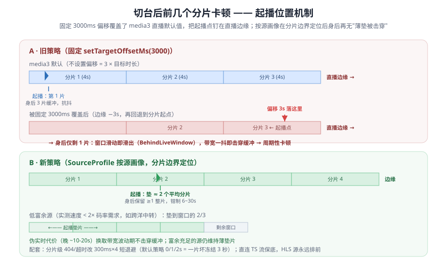
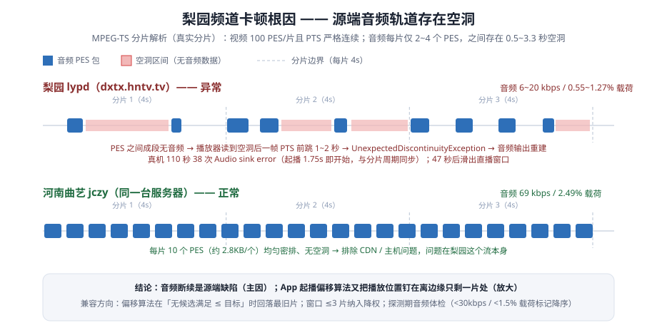
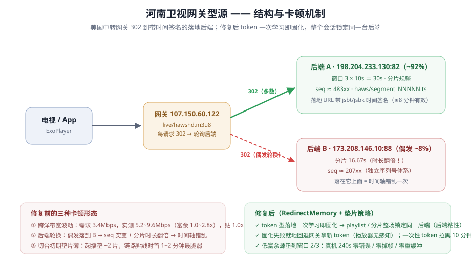
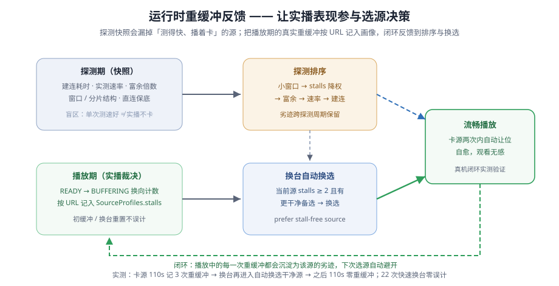

📺
我的电视 fshby 版
Android TV / 电视盒子 直播应用 · 干净频道列表 · 智能容错 · 自主升级
当前版本 v2.3.0 · 2026-09-30
基于 my-tv 深度定制的电视直播客户端。启动即自动拉取在线频道列表， 探测剔除死源、同名去重，多源自动容错切换，彻底告别"打开一半频道是坏的"。
⬇ 下载 APK armeabi-v7a / arm64-v8a功能亮点
🌐
在线频道列表
远程 m3u8/JSON 双格式自动识别，启动秒开缓存列表，后台静默刷新。🩺
死源探测剔除
并发探测全部频道源，不可用频道直接从列表消失；每 30 分钟自动重探。♻️
同名频道去重
画质标记、标点差异智能归一，同一频道只保留一个，列表清爽。🛡️
多源容错
播放失败自动轮换频道内备用源，瞬时网络抖动静默自愈，观看无感。⚡
直播追赶
落后直播边缘自动轻微加速追回，短窗口 IPTV 源不再周期性卡顿。🔄
应用自升级
设置页一键检查更新，直接从本站下载新版本安装，无需电脑。播放兼容性深度调优 · 异常分析记
针对真机上的四类播放异常，做了从 MPEG-TS 分片级取证（音频 PES / PTS 解析）、流式 logcat、 到源出口实测的完整根因定位，并逐一落地兼容方案（v2.3.0 后提交，随下个版本发布）： ①切台起播卡顿——固定 3s 偏移把播放点钉在直播边缘，改为按源画像在真实分片边界定位，垫 ≈2 片、分片级错误 300ms 短退避； ②梨园频道声音反复中断——定位为源端音频轨道空洞（每 4s 仅 2~4 个音频包，同主机对照频道为 10 个），客户端规避 + 短窗口降权； ③网关型源偶发卡顿——美国中转源 302 轮换后端导致时间轴错乱，token 型落地一次学习即固化（整场后端粘性），低富余源垫片加到窗口 2/3（伪实时换流畅）； ④「测得快、播着卡」的源——运行时重缓冲按 URL 记入画像，排序惩罚 + 换台自动换选干净源。 完整复盘见 docs/playback-analysis.md。




真机验证结论：网关源 240s 播放 0 错误 / 0 掉帧 / 0 重缓冲；CCTV1 / CCTV13 及约 20 个央视频道走台零重缓冲、零掉帧；
劣迹源 110s 记 3 次重缓冲后，换台再进入自动换选干净源，换选后 110s 零重缓冲；22 次快速换台零误计。
安装说明
- 下载 APK 到 U 盘（或手机下载后通过局域网传到盒子）。
- 电视/盒子上打开
设置 → 安全，允许安装未知来源应用。 - 用自带文件管理器打开 APK 安装，应用名「我的电视」。
- 首次启动会自动拉取在线频道列表，稍等几秒即可观看。
更新日志
v2.3.0 2026-09-30
- 频道质量 — 死源探测增加内容校验（媒体 Content-Type /
#EXTM3U/ TS 同步字节），剔除"返回 200 空页面"的伪活源，实测约占判活源 20%；探测读响应体限量 2KB，修复无 Range 支持的直播流导致的 OOM 崩溃循环；缓存直接保存过滤后的列表，启动秒开即为干净列表。 - 播放流畅度 — 同名多源合并（同一频道的多条线路不再只留第一条）；探测记录建连+首字节耗时，保留最快 2 条线路并按耗时升序，默认播放最快线路；主源失败自动轮换备用线路（有上限，全线路失败才提示错误）；DNS 缓存（TTL 5 分钟 / 上限 256 条）+ 302 落地地址自适应固化；缓冲参数按短窗口源收紧（起播 2 秒 / 重缓冲 1.5 秒 / 关闭后台缓冲）；切后台由 stop 改 pause，从桌面返回秒回画面。
- 启动速度 — 启动闸门与网络请求解耦，断网也能进入界面；频道列表预加载 + 缓存条件请求（ETag / Last-Modified + 内容签名），列表未变化时整段跳过重探；探测延后 20 秒启动、并发 12→6；M3U 解析热路径重写。
- 界面 — 远程频道图标优先复用内置官方台标，按 CCTV 编号建键匹配（CCTV-4K / 8K 与 CCTV-4 正确区分）。
- 稳定性 — 加固列表重建期适配器空值强转、空源频道下标越界、视图销毁后延迟回调等 6 处闪退点；多源轮换加上限，避免坏源无限轮换。
v2.2.0 2026-09-29
- 多源自动容错、换台去抖、断网自愈、直播追赶、OkHttp 数据源、30 分钟周期重探、自升级地址切换到本站。
v2.1.x 2026-09-29
- 全新 v2.1.8 界面基座、远程频道列表、频道去重与死源过滤、播放缓冲调优。